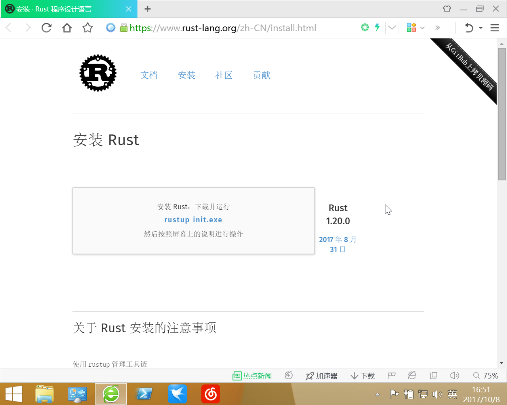
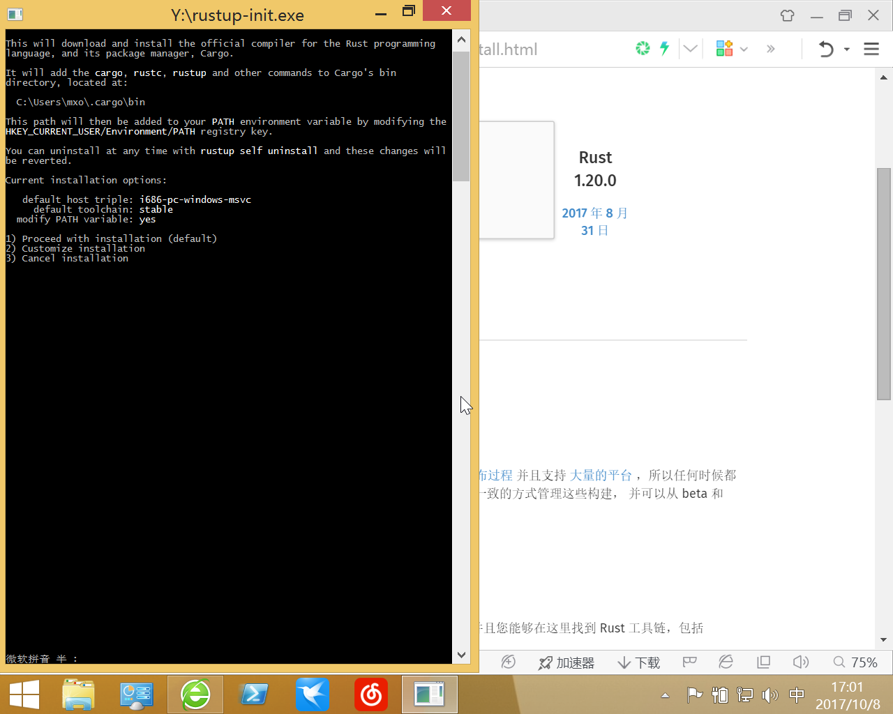
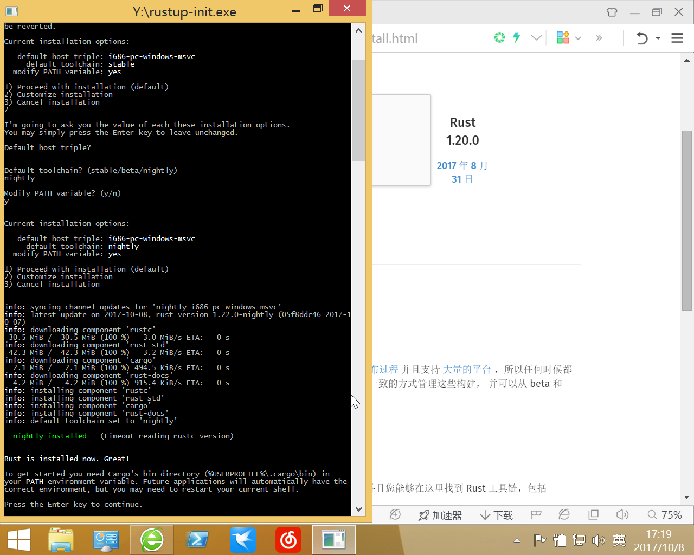
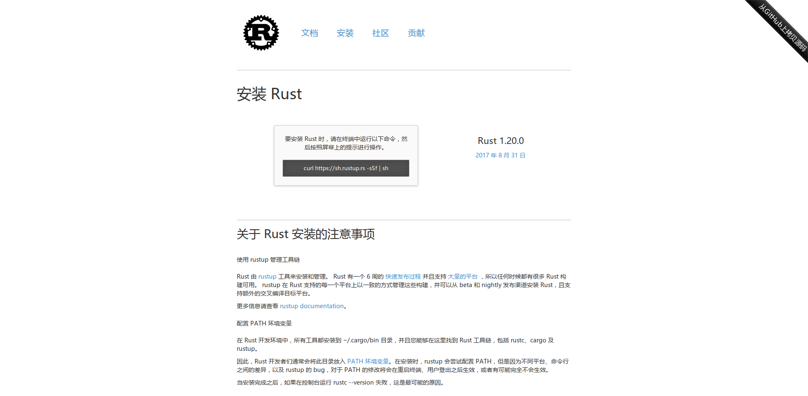

Rust的安装与配置
title: date: tags: Rust, cargo, rustup Category: articles
Rust 是一种系统编程语言。 它有着惊人的运行速度，能够防止段错误，并保证线程安全。
首先访问Rust官网的install页面, 它会根据你的UA显示不同的内容.
Windows平台
我这里是32位的虚拟机,由于学校教务处只兼容360, 故虚拟机里只装了360浏览器, 我的主力是Firefox.

Windows下载rustup‑init.exe点击运行如图:

它询问你安装配置, 你可以一路回车,它会使用默认的配置给你安装好稳定(stable)版
但我的建议是安装nightly工具链, 上面你输入2回车,
接下来它问你第一个Default host triple?, 这是些平台信息, 不用管它, 回车即可,
第二个是Default toolchain?(stable,beta,nightly), 即安装的工具链版本, 这里你输入nightly回车即可,
第三个是Modify PATH variable? (y/n), 即修改环境变量, 输入y表示同意回车即可,
然后它弹出一个安装清单current installation options, 就是上面那三个选项的内容(注意, 由于我这是32位虚拟机, 所以架构是i386, 大多数应该是x86-64, 反正不会影响使用就是了),
然后回车即可, 安装结束的画面如下图.

如果不出意外, 命令行输入rustup, cargo, rustc等就会输出它们的帮助信息.
Rust安装在你家目录(C:\Users\你的用户名), 它使用了三个目录, 包括:
- .cargo 包含了你的cargo的配置, 默认的工具链, 通过cargo安装的小工具等等
- .rustup 包含了实际的工具链以及从crates.io或GitHub下载的包等
- .multirust 是.rustup的一个软链接, 据说是为了兼容, 不用管它
如果出了意外,
首先看看家目录里有没有那些目录, 没有就重新安装(一般不会, 下载不下来应该在安装时就报错了).
有就去看看系统环境变量里有没有C:\Users\你的用户名\.cargo\bin这个路径, 没有就添加环境变量.
HelloWorld
使用cargo new app --bin新建一个名为app的可执行项目(cargo新建一个app目录,并把相关文件放入), 不加--bin建立的是库项目(默认不能运行).
然后cd进入那个app目录, cargo run即可Debug模式运行HelloWorld, cargo run --release以release模式运行, 此时对于目录下已经生成可执行文件 .
注: 默认生成的可执行文件在项目的target目录, debug下的是debug模式下产生的(cargo build), release下的是release模式产生的(cargo build --release).
PS C:\Users\mxo\Desktop\ap> cargo new app --bin
Created binary (application) `app` project
PS C:\Users\mxo\Desktop\ap> cd app
PS C:\Users\mxo\Desktop\ap\app> cargo run
Compiling app v0.1.0 (file:///C:/Users/mxo/Desktop/ap/app)
Finished dev [unoptimized + debuginfo] target(s) in 0.82 secs
Running `target\debug\app.exe`
Hello, world!
关于link.exe(Linux/Unix不用管这个)
这样安装的是MSVC版的工具链, 如果编译第三方库需要Cpp的 link.exe 的话, 可以去visual-cpp-build-tools安装VS的cpp工具链, 如果这个链接失效, 也可以直接用搜索引擎搜索visual-cpp-build-tools.
Linux/Unix平台

Linux的安装和windows的大同小异, 主要是第一步运行 curl https://sh.rustup.rs -sSf | sh, 然后跟着提示走就行(参考上面的windows部分).
装好后检查 rustc, cargo , rustup 能否在命令行调用.
如果没有就确认环境变量里有没有 ~/.cargo/bin, 没有就自己加.
检查家目录里有没有那三个目录, 没有就重新安装(一般不会, 下载不下来应该在安装时就报错了).
HelloWorld和windows一样的.
关于RLS或racer的高亮, 补全, 定义跳转, 语法检查, 代码格式化什么的
ide, 编辑器添加rust扩展(或者说插件?)后可以调用RLS或racer.
RLS的分析速度比racer快很多, 所以推荐RLS
目前的RLS还在预览版, 只支持 nightly , --toolchain nightly指定的工具链, 日后稳定了应该可以把 --preview去掉.
rustup component add rls-preview --toolchain nightly
rust-analysis RLS分析需要它
rustup component add rust-analysis
rust-src 源码跳转需要源码
rustup component add rust-src
rustfmt 如果你没有安装RLS, 也可以用rustfmt
注: 你可以自己调用(cargo fmt).
cargo install rustfmt
clippy 它会提醒你某些代码的更好的写法, 可以纠正些你的错误, 是初学者一个很好的老师.
注: 需要自己调用(cargo clippy).
cargo install clippy
安装完上面这些, 然后再打开VSocde安装Rust扩展, 然后再随便打开个.rs后缀的文本文件, VScode就会问你用哪个, 选RLS就行.
另外这是racer的安装
cargo install racer
关于第三方库从crates.io或Github/GitLab下载缓慢的问题
使用USTC镜像
ustc-rust-crates USTC的帮助里说的很清楚, 在$HOME/.cargo/config 中添加内容就行(如果没有就新建), 它的不足就是更新的可能不是很及时(多少小时同步一次来着).
使用代理
在$HOME/.cargo/config添加下面三行, 其中127.0.0.1:1080是你代理的地址和端口, timeout是超时时间.
官方文档在这里 config.html.
[http]
proxy = "127.0.0.1:1080"
timeout = 60000
一些链接
Rust语言官网 Rust
一些中文资料
- Rust 程序设计语言（第二版）
- RustPrimer 给初学者的Rust中文教程
- Rust by Example 中文版
- Rust宏小册
中文社区 RustChina
常用的英文文档
- The Rust Standard Library Rust标准库文档
- crates.io Rust Package Registry
- docs.rs 第三方库的文档(爬虫抓取crates.io生成)
- doc.crates.io crates.io和cargo的文档
rustup rustup的文档
可能用到的